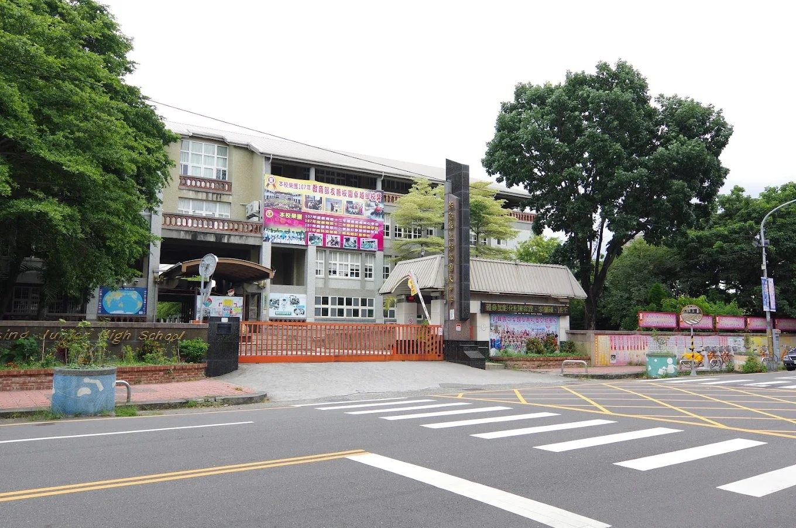
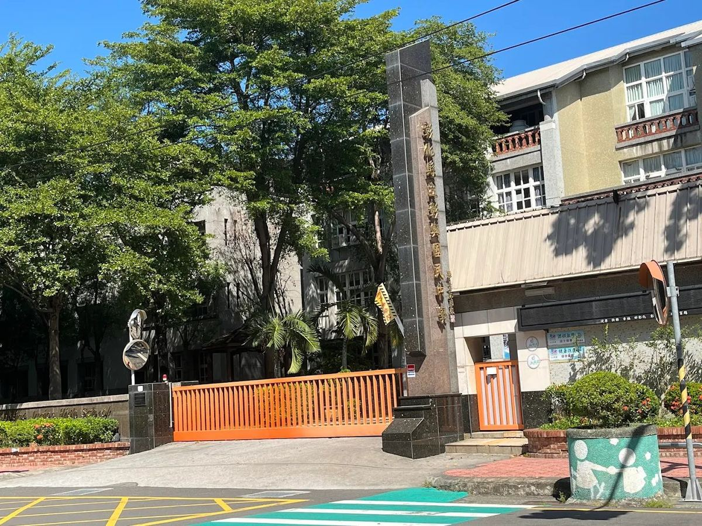
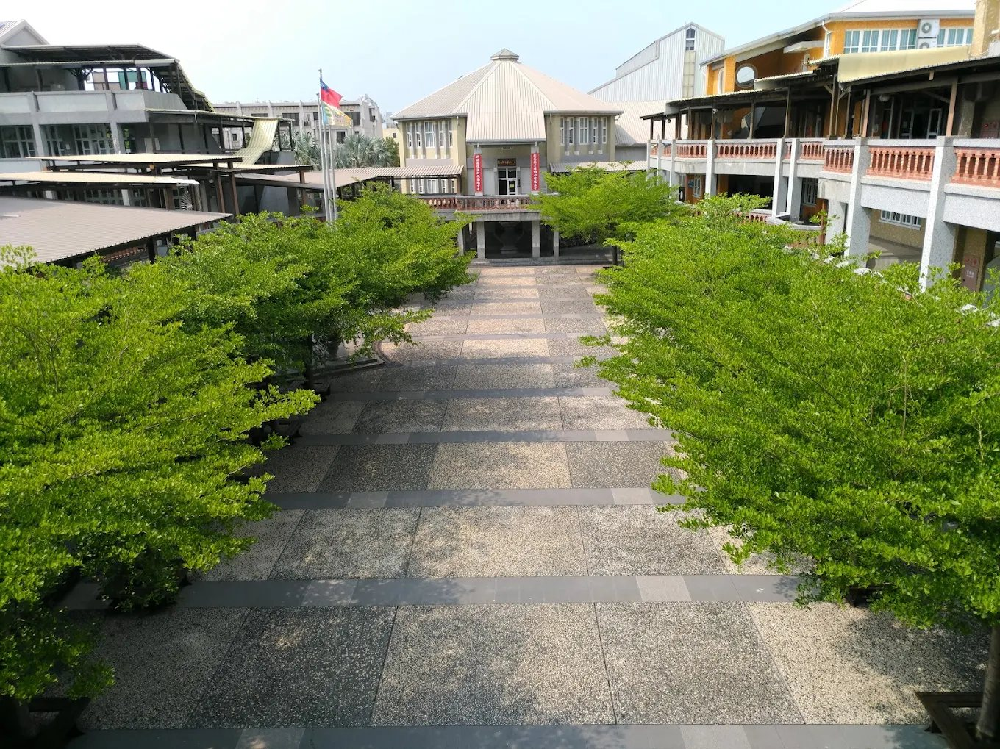
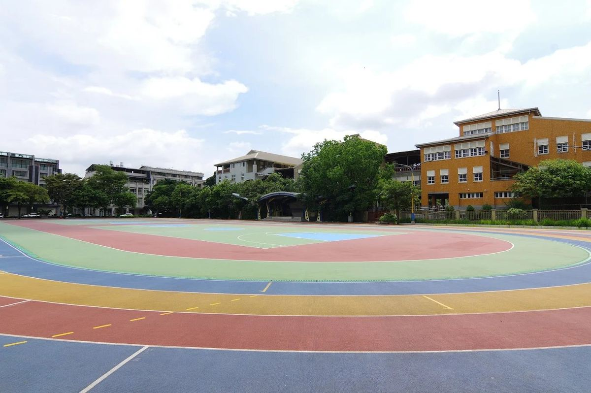
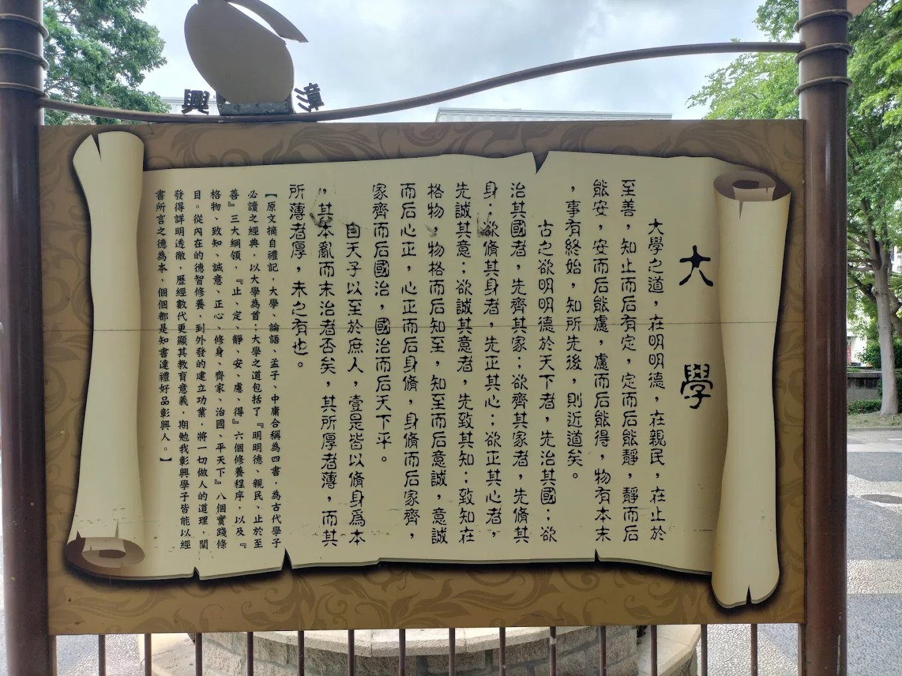
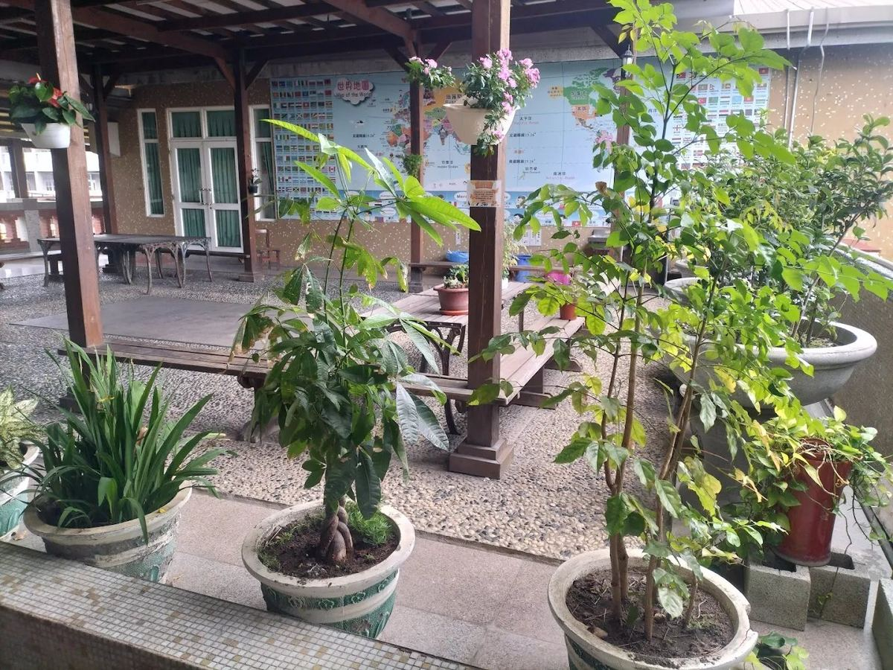
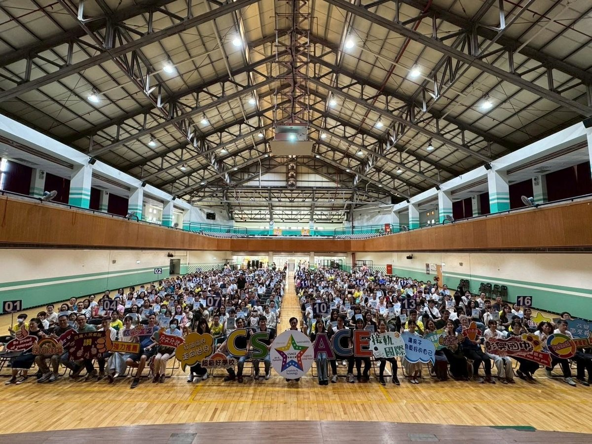
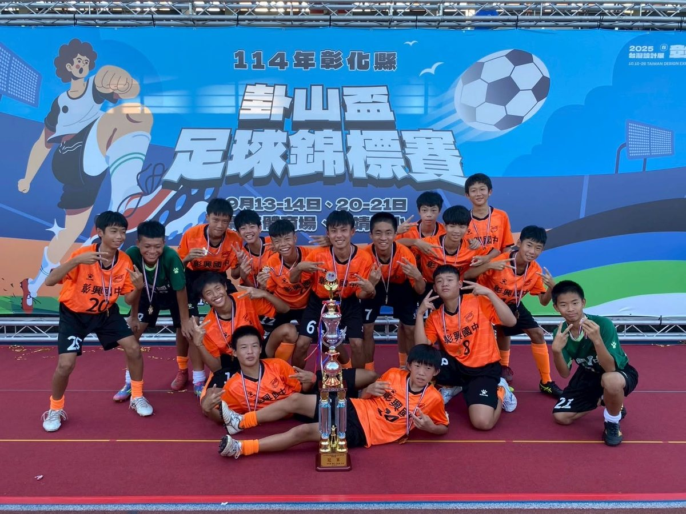
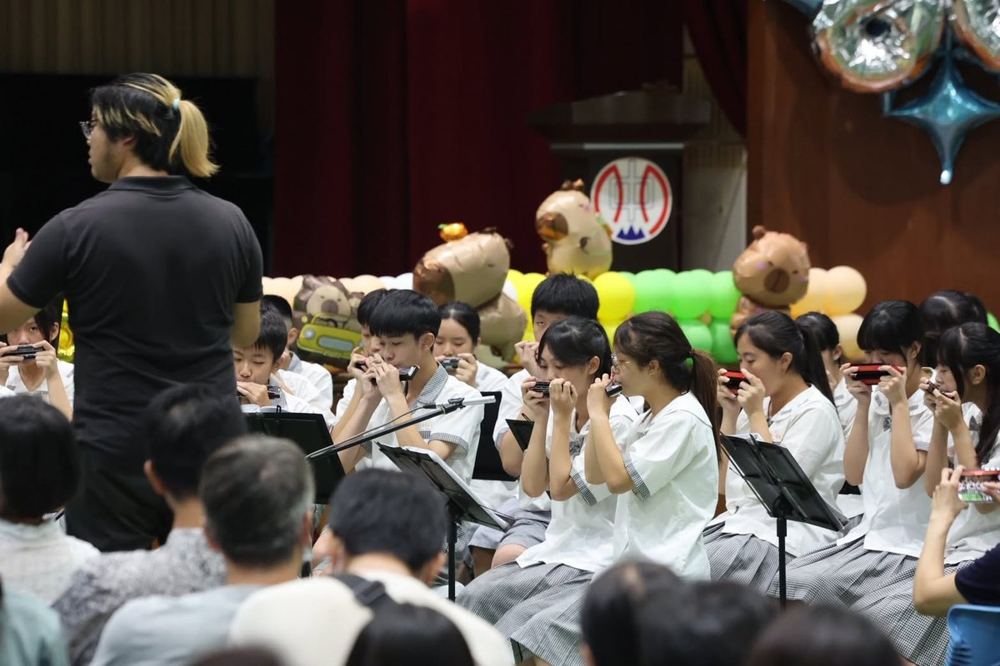
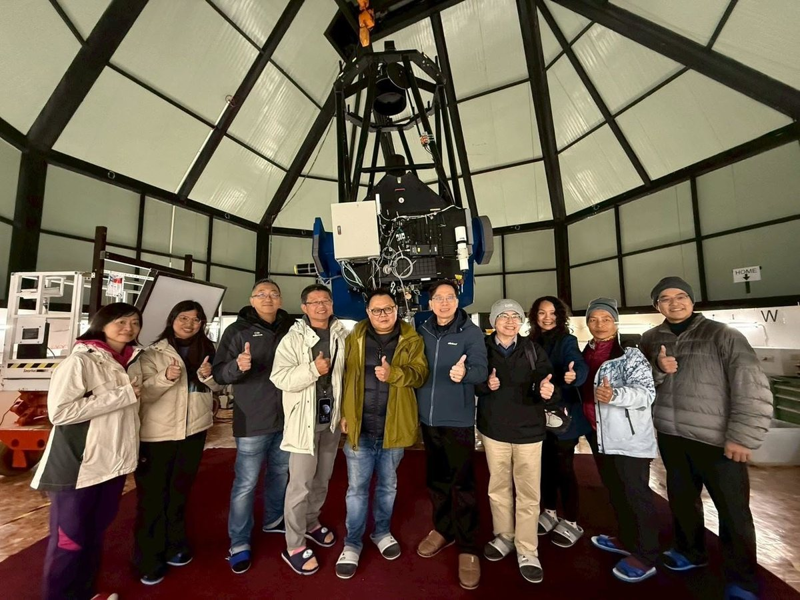

One of Changhua County's most sought-after junior high schools — right in the heart of the city.
彰化縣最搶手的國中之一，座落彰化市核心地帶。
Changsing Junior High sits at the southern edge of Changhua City, where the urban grid meets the fields of Huatan Township. Founded in 1997, the school has grown in less than three decades into a campus that families plan years ahead to join: enrollment is capped, and demand never drops.
彰興國中坐落於彰化市南端，城市邊界與花壇鄉交界之處。創立於民國 86 年（1997），不到三十年便成為家長們超前佈局的首選學區——總量管制，年年搶破頭。
Under Principal Kuo Jia-wen, who took office in August 2025, Changsing continues to set the standard: strong academics, certified immersive English instruction, national awards in arts and science, and a campus where every student finds a reason to thrive.
在 114 年 8 月接任的郭佳文校長帶領下，彰興持續保持高水準：紮實學風、獲教育部認證的沉浸式英語教學、全國性藝術與科學獎項，以及讓每個孩子都能找到亮點的校園環境。
A walk around Changsing — from the front gate to the rooftop garden.
從校門口到頂樓花園，走一圈彰興的校園角落。







Ministry of Education–certified for immersive English instruction. English reaches beyond the language class — into science labs, morning announcements, PE coaching, and every corner of school life.

International CyberFair Platinum Award winner, National Reading Milestone School, Top 100 in Arts & Humanities, and SIEP / ISA International Education School — Changsing's trophy case keeps growing.

The harmonica club is a campus institution; arts programs earned a Vice-President commendation. Changsing is officially recognized as a Space Aesthetics Characteristic School — the campus itself is a work of art.

An on-campus astronomy observatory, a multi-species ecological garden (sheep, birds, butterflies), robotics, and prize-winning CyberFair projects — Changsing students learn by doing and asking why.
Changsing's immersive English program is not an add-on — it is woven into the school's daily rhythm. When international guests visit, Changsing students are the guides. When the morning announcement plays, it plays in two languages. English here is not a subject; it is a practice.